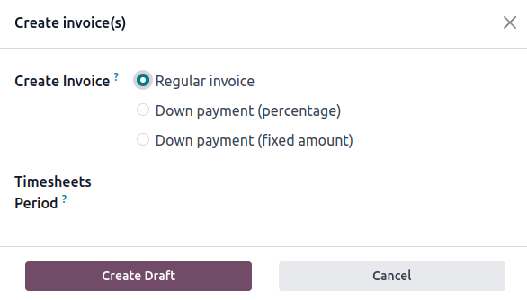

RSTガイドラインとチートシート¶
重要
貢献する前に、 コンテンツガイドライン と ドキュメント のページを読むことを強くお勧めします。
以下のRSTガイドラインに従って、ドキュメントに貢献し、残りのドキュメントとの整合性を維持し、チームのレビュープロセスを容易にします。
ハイパーリンク:
書式設定¶
Use specific formatting to improve clarity and readability. For example, apply メニューの選択 for menu paths, GUI 要素 for other user interface elements, such as fields, buttons, and options, メモ for notes, 例 for examples, etc.
注釈
段落、リスト、ディレクティブなど、さまざまなブロック要素の間に空白行を追加して、適切なレンダリングと書式設定を行います。
ハイパーリンク¶
内部 URL: 相対リンク¶
現在のページと同じディレクトリにない 内部ドキュメントページ または file を参照する必要がある場合。 *絶対ファイルパス*の代わりに、常に*相対ファイルパス*を使用します。 これにより、バージョンアップデート、フォルダ名の変更、ディレクトリ構造の再編成でもリンクは有効であることが保証されます。
絶対ファイルパスは、ルートディレクトリからターゲットの場所を示します。相対ファイルパスは、スマート表記（例えば、`）を使用します。 /`は親フォルダにリダイレクトされます) ターゲットの場所を 相対 ソースドキュメントの場所に指定します。
Example
注釈
次の例は、絶対リンクと相対リンクの違いを説明するためのものです。ドキュメンテーションページを参照するときは、常に ドキュメントページのハイパーリンク を使用します。
以下のソースファイルツリーが与えられます。
documentation
├── content
│ └── applications
│ │ └── sales
│ │ │ └── sales
│ │ │ │ └── products_prices
│ │ │ │ │ └── products
│ │ │ │ │ │ └── import.rst
│ │ │ │ │ │ └── variants.rst
│ │ │ │ │ └── prices.rst
prices.rst と variants.rst への参照は、以下のように import.rst から行うことができます。
絶対:
documentation/content/applications/sales/products_prices/prices.rstdocumentation/content/applications/sales/products_prices/products/variants.rst
相対値:
../prices.rstvariants.rst
リファクタリング: ハイパーリンクターゲット¶
セクションの見出しまたはハイパーリンクのターゲットをリファクタリング（新しいコンテンツを追加せずに改善）するとき これらのターゲットへのハイパーリンクの参照を壊したり、それに応じて更新したりしないように気をつけてください。
ハイパーリンクラベル¶
:ref:`ハイパーリンク <contributing/rst/hyperlinks> ` に記述しないラベルを使用しないでください。
インデックス¶
スペースのみを使用してください (タブは使用しません)。
必要に応じて、インデントされた行の先頭に空白を使用して、上の行のマークアップの最初の文字に合わせます。 これは通常、3 つのスペースを意味しますが、箇条書きリストの場合は 2 つしか必要ありません。
Example
最初の`:`は`i`（3つのスペース）の下にあります。
.. image:: media/example.png
:alt: example
`:titlesonly:`とページ参照は、`t`の下に始まります(3つのスペース):
.. toctree::
:titlesonly:
payables/supplier_bills
payables/pay
継続行は、`I’s of Invoice（2つのスペース）の下に再開します：
- Invoice on ordered quantity: invoice the full order as soon as the sales order is confirmed.
- Invoice on delivered quantity: invoice on what was delivered even if it is a partial
delivery.
100文字の制限¶
RSTでは、レンダリングされたHTMLに改行を強制せずに改行することが可能です。 この機能を利用して、**最大100文字**の行を書いてください。 単語を区切るために行末に空白を残す必要はありません。
ちなみに
menuselectionやdocなどのマークアップ内でも、任意のスペースに行を入れることができます。外部ハイパーリンクの中には100文字を超えるものがありますが、1行に残すことは可能です。
Example
To register your seller account in Odoo, go to :menuselection:`Sales --> Configuration -->
Settings --> Amazon Connector --> Amazon Accounts` and click :guilabel:`Create`. You can find
the **Seller ID** under the link :guilabel:`Your Merchant Token`.
見出し¶
フォーマット行ごとに (例えば ===) ヘッダに文字があるのと同じだけ多くのシンボル (=) を書き込みます。
書式設定に使用される記号は、実際には重要ではありません。 それは装飾された見出しのサイズを決定するように、彼らが書かれている順序だけが重要です。 これは、異なる見出しフォーマットと異なる順序で発生する可能性があることを意味します。 この場合、ドキュメント内の書式に従ってください。 いずれの場合でも、以下に示す書式を使用してください。
見出しのサイズ |
書式設定 |
|---|---|
H1 |
=======
Heading
=======
|
H2 |
Heading
=======
|
H3 |
Heading
-------
|
H4 |
Heading
~~~~~~~
|
H5 |
Heading
*******
|
H6 |
Heading
^^^^^^^
|
重要
それぞれのドキュメントには**H1の見出し1つだけ**が必要です。
Markups¶
Emphasis (italic)¶
テキストの一部を強調するには、テキストは斜体でレンダリングされます。
フォームを保存する前に*情報を記入してください。 |
Fill out the information *before* saving the form.
|
強調(太字)¶
テキストの一部を強調するには、テキストは太字でレンダリングされます。
subdomain は別のドメインの一部です。 |
A **subdomain** is a domain that is a part of another domain.
|
専門用語（文字列）¶
技術用語または挿入する特定の値を書く。テキストはリテラルでレンダリングされます。
例えば、 |
Insert the IP address of your printer, for example, `192.168.1.25`.
|
定義¶
用語を定義するには、dfn マークアップを使用します。
ドキュメントはRST で書かれており、きちんと表示するために:dfn:が HTML に変換される必要があります。 |
The documentation is written in RST and needs to be built (:dfn:`converted to HTML`) to
display nicely.
|
略語¶
`abbr`マークアップを使用して、ツールチップとして表示される自己定義の略語を記述します。
Odoo は OCR と人工知能技術を使用して文書の内容を認識します。 |
Odoo uses :abbr:`OCR (optical character recognition)` and artificial intelligence
technologies to recognize the content of the documents.
|
GUI 要素¶
guilabel マークアップを使用して、インタラクティブなユーザーインターフェイスのテキスト（ラベルなど）を特定します。
資格情報を更新し、 Save をクリックします。 |
Update your credentials, then click on :guilabel:`Save`.
|
注釈
概念や一般用語を参照するときは、`guilabel`マークアップを使用しないでください。
Example
- 良い例:クレジットノートを作成するには、 をクリックします。
- 不正な例:Credit Note を作成するには、 に移動し、 Invoice を開き、 Credit Note をクリックします。
ファイル¶
ファイルのパスや名前を指定するには、 file マークアップを使用します。
リポジトリのルートにある |
Create redirections using the :file:`redirects.txt` file found at the root of the
repository.
|
(Command)¶
コマンドを強調表示するには、command マークアップを使用します。
既存のビルド済みファイルを削除し、HTMLにドキュメントをビルドするには、 :command:`make clean html`を実行します。 |
Run the command :command:`make clean html` to delete existing built files and build the
documentation to HTML.
|
アイコン¶
Use the icon markup to add the class name of an icon. There are three icon sets used in Odoo:
FontAwesome4 (fa-*), Odoo UI
(oi-*) and Odoo Spreadsheet (os-*) icons.
アイコンの名前を GUI 要素 と記述子として括弧内に従ってください。
グラフビューは、 (area chart) アイコンで表されます。 ピボットビューは、 (ピボットテーブル) アイコンで表されます。 (global filters) を Odoo スプレッドシート に使用します。 |
The graph view is represented by the :icon:`fa-area-chart` :guilabel:`(area chart)` icon.
The pivot view is represented by the :icon:`oi-view-pivot` icon.
Use :icon:`os-global-filters` :guilabel:`(global filters)` in Odoo **Spreadsheet**.
|
リスト¶
箇条書きリスト¶
|
- This is a bulleted list.
- It has two items, the second
item uses two lines.
|
番号付きリスト¶
|
#. This is a numbered list.
#. Numbering is automatic.
|
|
6. Use this format to start the numbering
with a number other than one.
#. The numbering is automatic from there.
|
ちなみに
コードの回復力を向上させるためには、1.、`2.`などの代わりに`#.`を使用することをお勧めします。
ネストされたリスト¶
ちなみに
リスト内のネストされた要素の前に空白行を追加します。
インデント ネストされたリストは正しく、サブアイテムは親アイテムの下に配置されます。
|
- This is the first item of a bulleted list.
#. It has a nested numbered list
#. with two items.
|
ハイパーリンク¶
外部ハイパーリンク¶
外部ハイパーリンクはカスタムラベルを持つURLへのリンクです。これらは構文に従います: `label <URL>`_ 。
注釈
別のドキュメントページをターゲットにする場合は、 documentation page hyperlinks を使用してください。
:ref:`非記述型ハイパーリンクラベル <contributing/rst/descriptive-labels> ` を使用しないでください。
For instance, `this is an external hyperlink to Odoo's website <https://www.odoo.com>`_.
|
外部ハイパーリンクエイリアス¶
外部ハイパーリンクのエイリアスを使用すると、外部ハイパーリンクのショートカットを作成できます。定義の構文は次のとおりです。 _target: URL` を参照するには、次の2つの方法があります。
target_は、ターゲット名をラベルとし、URLを参照としてハイパーリンクを作成します。_はターゲットの後に移動したことに注意してください。`label <target_>`_ラベルはターゲットの名前を置き換え、ターゲットはURLに置き換えられます。
A proof-of-concept is a simplified version, a prototype of what is expected to agree on the main lines of expected changes. PoC is a common abbreviation. |
.. _proof-of-concept: https://en.wikipedia.org/wiki/Proof_of_concept
A proof-of-concept_ is a simplified version, a prototype of what is expected to agree on
the main lines of expected changes. `PoC <proof-of-concept_>`_ is a common abbreviation.
|
カスタム アンカー¶
カスタムアンカーは外部ハイパーリンクエイリアスと同じ構文に従いますが、URLはありません。 ターゲットをアンカーとして使用することで、RST ファイルの特定の部分を参照することができます。 ユーザーが参照をクリックすると、ターゲットが定義されているドキュメントページの一部に移動されます。
定義の構文は: .. _target: です。ref マークアップを使って参照するには2つの方法があります。
:ref:`target`は、ラベルとして定義されている見出しを持つアンカーへのハイパーリンクを作成します。:ref:`label <target>`は、与えられたラベルを持つアンカーへのハイパーリンクを作成します。
重要
ターゲットは ref マークアップで参照されるとドキュメント全体から見ることができます。 ターゲット名のプレフィックスに app/section name と file name をスラッシュで区切ってください。e. 、accounting/taxes/configuration
注釈
Please refer to the ハイパーリンク section to learn more about relative links. |
.. _contributing/rst/hyperlinks-guidelines:
Hyperlinks
==========
.. _contributing/rst/relative-links:
Use relative links for internal URLs
------------------------------------
Please refer to the :ref:`contributing/rst/hyperlinks-guidelines` section to learn more
about :ref:`relative links <contributing/rst/relative-links>`.
|
ドキュメントページのハイパーリンク¶
doc マークアップを使用すると、相対的なファイルパスを介してファイルツリー内のどこにいてもドキュメントページを参照できます。 マークアップの使用方法は2つあります。どちらも「doc」マークアップを使用します。
:doc:`path_to_doc_page`は、ページのタイトルをラベルとしたドキュメントページへのハイパーリンクを作成します。:doc:`label <path_to_doc_page>`は、与えられたラベルのドキュメントページへのハイパーリンクを作成します。
Accounting documentation <../../applications/finance/accounting>を参照してください。 :doc:../../applications/finance/accounting/customer_invoices` について詳しくはこちらをご覧ください。 |
Please refer to the :doc:`Accounting documentation <../../../applications/finance/accounting>`
to learn more about :doc:`../../../applications/finance/accounting/customer_invoices`.
|
重要
Use relative links for documentation page hyperlinks
ファイルダウンロードのハイパーリンク¶
download マークアップを使用すると、ソースツリー内のファイル（必ずしも :abbr:`RST (reStructuredText) ドキュメントであるとは限りません）を参照することができます。
|
Download this :download:`module structure template <rst_guidelines/my_module.zip>` to start building your module.
|
画像¶
image マークアップは、ドキュメントに画像を挿入することができます。
|  |
.. image:: rst_guidelines/create-invoice.png
:alt: Create an invoice.
|
ちなみに
関連項目
アラートブロック (訓戒)¶
関連項目¶
.. seealso::
- :doc:`Accounting documentation <../../../applications/finance/accounting>`
- :doc:`../../../applications/sales/sales/invoicing/proforma`
- `Google documentation on setting up Analytics for a website <https://support.google.com/analytics/answer/1008015?hl=en/>`_
|
メモ¶
注釈 この警告ブロックを使用して、読者の注意を引き、重要な追加情報を強調表示します。 |
.. note::
Use this alert block to draw the reader's attention and highlight important additional information.
|
Tip¶
ちなみに この警告ブロックを使用して、アクションを必要とする有用なトリックを読者に知らせます。 |
.. tip::
Use this alert block to inform the reader about a useful trick that requires an action.
|
例¶
Example このアラートブロックを使用して、例を表示します。 |
.. example::
Use this alert block to show an example.
|
演習¶
Exercise この警告ブロックを使用して、読者に運動を提案します。 |
.. exercise::
Use this alert block to suggest an exercise to the reader.
|
重要¶
重要 この警告ブロックを使用して、重要な情報を読者に通知します。 |
.. important::
Use this alert block to notify the reader about important information.
|
警告¶
警告 この警告ブロックを使用して、リーダが警告に記述されていることに注意を進めるように要求します。 |
.. warning::
Use this alert block to require the reader to proceed with caution with what is described in the warning.
|
危険¶
危険 この警告ブロックを使用して、読者の注意を深刻な脅威にもたらします。 |
.. danger::
Use this alert block to bring the reader's attention to a serious threat.
|
カスタム¶
タイトル 任意の タイトル を使って、このアラートブロックをカスタマイズします。 |
.. admonition:: Title
Customize this alert block with a **Title** of your choice.
|
テーブル¶
表の一覧¶
リスト表では、2 レベルの箇条書きリストを使用してデータをテーブルに変換します。最初のレベルは行を表し、2 番目のレベルは列を表します。
|
|||||||||
.. list-table::
:header-rows: 1
:stub-columns: 1
* - Name
- Country
- Favorite colour
* - Raúl
- Montenegro
- Purple
* - Mélanie
- France
- Turquoise
|
グリッド表¶
グリッドテーブルはレンダリングされたテーブルを表し、より視覚的に操作できます。
|
|||||||||||
+-----------------------+--------------+---------------+
| | Shirts | T-shirts |
+=======================+==============+===============+
| **Available colours** | Purple | Green |
| +--------------+---------------+
| | Turquoise | Orange |
+-----------------------+--------------+---------------+
| **Sleeves length** | Long sleeves | Short sleeves |
+-----------------------+--------------+---------------+
|
ちなみに
セルをマージするには、
-と|区切りを削除します。this convenient table generator を使用してテーブルを構築します。次に、生成された書式をドキュメントにコピー&ペーストします。
コードブロック¶
コード例を表示するには、code-block ディレクティブを使用します。言語の構文規則に従ってコードをフォーマットする言語（例、python、xmlなど）を指定します。
def main():
print("Hello world!")
|
.. code-block:: python
def main():
print("Hello world!")
|
スポイラー¶
42 |
.. spoiler:: Answer to the Ultimate Question of Life, the Universe, and Everything
**42**
|
コンテンツ タブ¶
基本タブ¶
基本的なタブは、コンテンツを複数のオプションに分割するのに便利です。tabs マークアップは、タブのシーケンスを定義するために使用されます。 それぞれのタブは、 tab マークアップとラベルで定義されます。
Odooオンラインユーザー専用のコンテンツ。 Odoo.shユーザーのための代替。 オンプレミスユーザ向けの3つ目のバージョンです。 |
.. tabs::
.. tab:: Odoo Online
Content dedicated to Odoo Online users.
.. tab:: Odoo.sh
Alternative for Odoo.sh users.
.. tab:: On-premise
Third version for On-premise users.
|
入れ子になっているタブ¶
タブは、互いに入れ子にすることができます。
私たちに最も近い星。 私たちに最も近い二つ目の星。 ノーススター。 地球を軌道に乗せる。 軌道木星。 |
.. tabs::
.. tab:: Stars
.. tabs::
.. tab:: The Sun
The closest star to us.
.. tab:: Proxima Centauri
The second closest star to us.
.. tab:: Polaris
The North Star.
.. tab:: Moons
.. tabs::
.. tab:: The Moon
Orbits the Earth.
.. tab:: Titan
Orbits Jupiter.
|
タブをグループ化¶
グループタブは、グループレベルに基づいて同期する特別なタブです。 最後に選択したグループは記憶され、ユーザーがページに戻るか、タブグループで別のページにアクセスしたときに自動的に選択されます。 グループタブを定義するには、 group-tab マークアップを使用します。
C++ Python Java int main(const int argc, const char **argv) {
return 0;
}
def main():
return
class Main {
public static void main(String[] args) {}
}
|
.. tabs::
.. group-tab:: C++
C++
.. group-tab:: Python
Python
.. group-tab:: Java
Java
.. tabs::
.. group-tab:: C++
.. code-block:: c++
int main(const int argc, const char **argv) {
return 0;
}
.. group-tab:: Python
.. code-block:: python
def main():
return
.. group-tab:: Java
.. code-block:: java
class Main {
public static void main(String[] args) {}
}
|
Code tabs¶
コードタブを作成するには、code-tab マークアップを使用します。 これは基本的に group tabs で、タブの内容を :ref:`code block <contributing/rst/code-blocks>として扱います。 言語の構文ルールに従ってコードをフォーマットする言語を指定します。 ラベルが設定されている場合は、言語名の代わりにタブをグループ化するために使用されます。
#include <iostream>
int main() {
std::cout << "Hello World";
return 0;
}
print("Hello World")
console.log("Hello World");
|
.. tabs::
.. code-tab:: c++ Hello C++
#include <iostream>
int main() {
std::cout << "Hello World";
return 0;
}
.. code-tab:: python Hello Python
print("Hello World")
.. code-tab:: javascript Hello JavaScript
console.log("Hello World");
|
カード¶
.. cards::
.. card:: Documentation
:target: ../documentation
:tag: Step-by-step guide
:large:
Use this guide to acquire the tools and knowledge you need to write documentation.
.. card:: Content guidelines
:target: content_guidelines
List of guidelines, tips, and tricks to help you create clear and effective content.
.. card:: RST guidelines
:target: rst_guidelines
List of technical guidelines to observe when writing with reStructuredText.
|
ドキュメントのメタデータ¶
Sphinx は、ページ全体の動作を指定するドキュメント全体のメタデータマークアップをサポートします。 これらはコロン(:)の間にソースファイルの先頭に置かなければなりません。
メタデータ |
目的 |
|
ナビゲーションメニューからアクセス可能なタスクツリーページを作成します。 |
|
|
|
「このページで」サイドバーを非表示にして、コンテンツのページ幅をフルに設定します。 |
|
検索結果からドキュメントを除外します。 |
|
ドキュメントをトックツリーに含める必要がないようにします。 |
|
インタラクティブなチュートリアルやコードの抜粋を表示するために使用できる動的なサイドカラムを表示します。
例えば、 会計お役立ちリスト を参照してください。
|
|
CSSファイル(カンマ区切り)をファイルにリンクします。 |
|
JSファイルをドキュメントにリンクします。 |
|
指定したクラスをファイルの |
書式設定ヒント¶
段落ではなく行を区切ってください¶
2 つで区切る最初の長い行 -> ここで <- は単一の行としてレンダリングされます。
改行に続く２行目。
|
| A first long line that you break in two
-> here <- is rendered as a single line.
| A second line that follows a line break.
|
マークアップ記号をエスケープする¶
バックスラッシュ(\)でエスケープされたマークアップシンボルは正常にレンダリングされます。 例えば、 この \*\*\*line of text\*\*markup\* symbols は “this ***line of text*** with *markup* symbols” としてレンダリングされます。
バックティック(`)に関しては、 :ref:`外部ハイパーリンク <contributing/rst/external-hyperlinks>`のような多くの場合に使用されます。 外側のバックトラックは、囲まれたバックスラッシュを解釈し、それによって内側のバックスラッシュをエスケープすることを防ぐため、エスケープのためのバックスラッシュを使用することはもはやオプションではなくなりました。 例えば、 ``this formatting```` は [UNKNOWN NODE title_reference] エラーを生成します。代わりに、 `this formatting```` は次の結果を生成するために使用する必要があります: `this formatting` 。